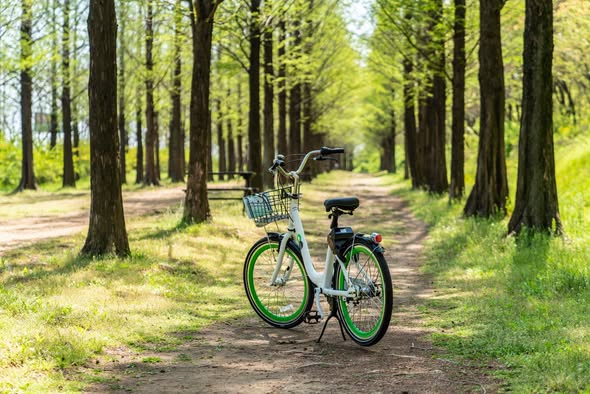

×

Project Background:
The Han River is a major recreational and leisure spot in Seoul, attracting a large number of cyclists. This project aims to visually analyze the peak usage times and the factors (temperature, humidity, rainfall, etc.) influencing ridership by combining one full year of Seoul bike rental data with local weather data.
Analysis Goal: Beyond simply counting rentals, the objective was to identify the "Optimal Time and Environmental Conditions" for a pleasant and active bike ride, providing valuable insights to the viewers. We used D3.js to build an interactive dashboard that allows users to select time periods and explore weather factors and hourly rental patterns.
Dataset Information
- Source: Seoul Public Bike Rental Data & Seoul Local Weather Data (Open Data Portal)
- Time Period: 1 Year
- Size: Approximately 8,760 hourly records (8,760 hours in a year), resulting in around 365 daily rental records.